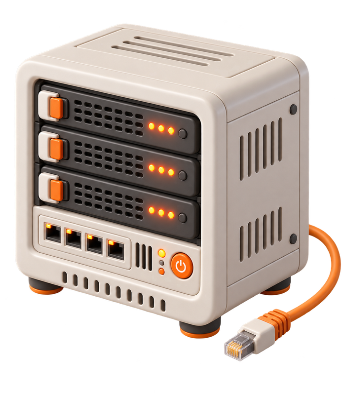
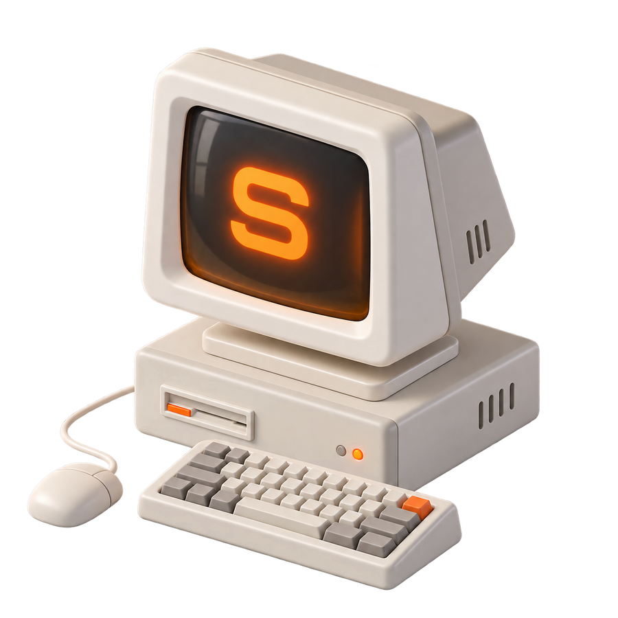
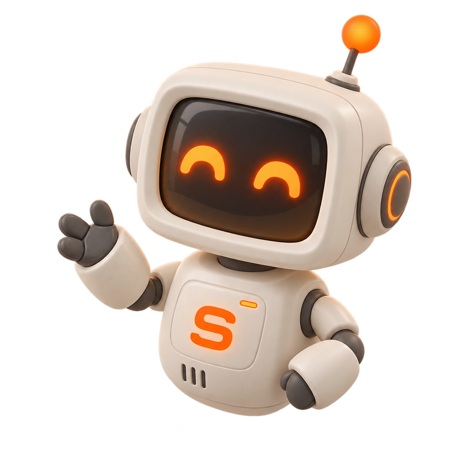
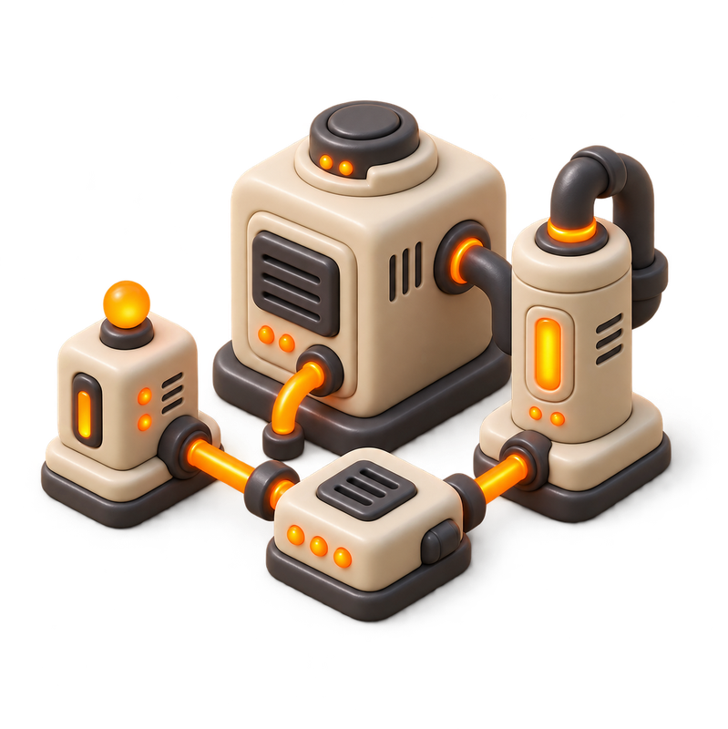
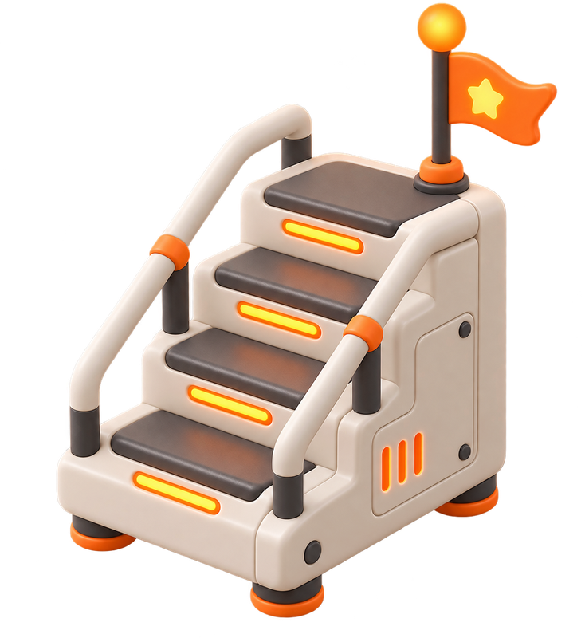
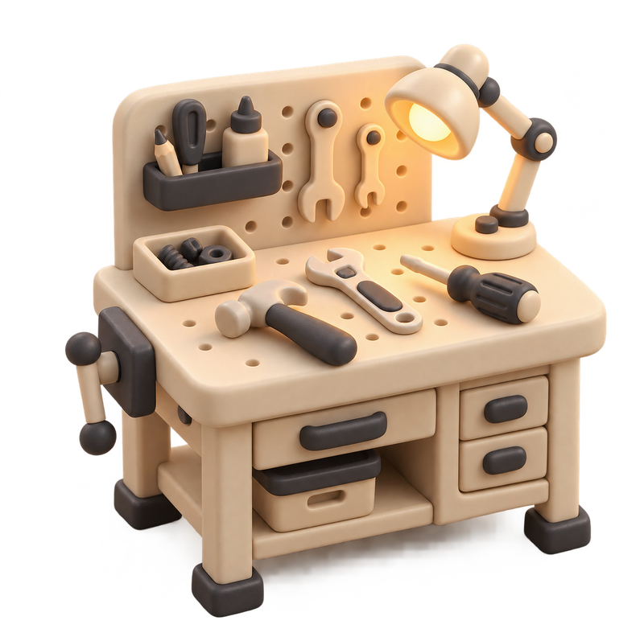

Production разработка
Регулярные материалы о том, как устроена реальная разработка веб-сервисов.

Реальные решения и опыт, архитектура проектов, AI-first разработка с агентами, разбор production кейсов и сообщество.

Регулярные материалы о том, как устроена реальная разработка веб-сервисов.

Harness, скиллы и пайплайны агентов: проверяем результат их работы и учимся принимать правильные решения.

Разбор устройства бэкенда, фронтенда и микросервисов. Строим реальные проекты, а не учебные примеры.

Гайды по поиску работы и продвижению: резюме, собеседования, грейды.

Показываю свою текущую работу: решения, ошибки, инфраструктуру, деплой. Практика, с которой можно работать на production, улучшать навыки и продвигаться в карьере.

Стань частью комьюнити разработчиков: закрытый чат, обмен опытом, обратная связь по твоим решениям и прямая связь со мной.
Уроки, разборы и реальные проекты: покрываем весь путь разработки production-продуктов. Наберись опыта, который важен в коммерческой разработке.
$ sachkov pipeline --run
✓ 01 проектирование и архитектура 1.2s
✓ 02 AI-first разработка 3.8s
✓ 03 ревью и тесты 2.4s
✓ 04 CI/CD и деплой 0.9s
✓ 05 релиз и мониторинг 0.4s
✓ release deployed → production ▋
Материалы выходят постоянно: делюсь 5-летним опытом в реальном времени.
Любой вопрос, прямые трансляции, разборы решений, помощь.
Backend, frontend, инфраструктура, интеграции: от базы данных до платежей и AI.
Открытый код, понятные уроки, реальные сценарии: навыки, которые делают тебя востребованным на рынке.
Знаешь хотя бы один язык программирования и хочешь делать реальные проекты, а не учебные примеры.
Работаешь разработчиком и хочешь расти в профессии, переходить на следующий уровень.
Хочешь освоить AI-first разработку: агенты, подходы и практики, которые всё чаще требуются на реальной работе.
Хочешь стать частью сообщества заряженных разработчиков: обмен опытом и прямая связь со мной.
Нужно пространство, которое развивается всегда: актуальные материалы выходят постоянно, а не записанный курс, который устаревает.
Не готов платить 100+ тысяч за курс: подписка стоит в десятки раз меньше.
Не знаешь программирования совсем и ищешь базовое обучение.
Нужна чёткая программа и последовательный курс: это не курс.
Ищешь гарантию трудоустройства.
Да. Принципы production-разработки и AI-first подходы не привязаны к языку: примеры в основном на TypeScript, но всё переносится на Go, C#, Java и любой другой стек.
Нет, это живой канал. Материалы выходят постоянно и следуют за реальной работой: сегодня архитектура сервиса, завтра разбор пайплайна с агентами. Ты выбираешь темы, которые нужны именно тебе.
Столько, сколько хочешь. Материалы короткие и практичные: их можно смотреть в своём темпе, а вопросы задавать в чате.
Да. Прямая связь со мной, разборы решений и прямые трансляции: любой вопрос по теме можно задать лично.
Подписка отменяется в любой момент, без обязательств и скрытых условий.
Подписка на приватный Telegram-канал: материалы каждую неделю, прямая связь со мной, отмена в любой момент.
Получить доступ